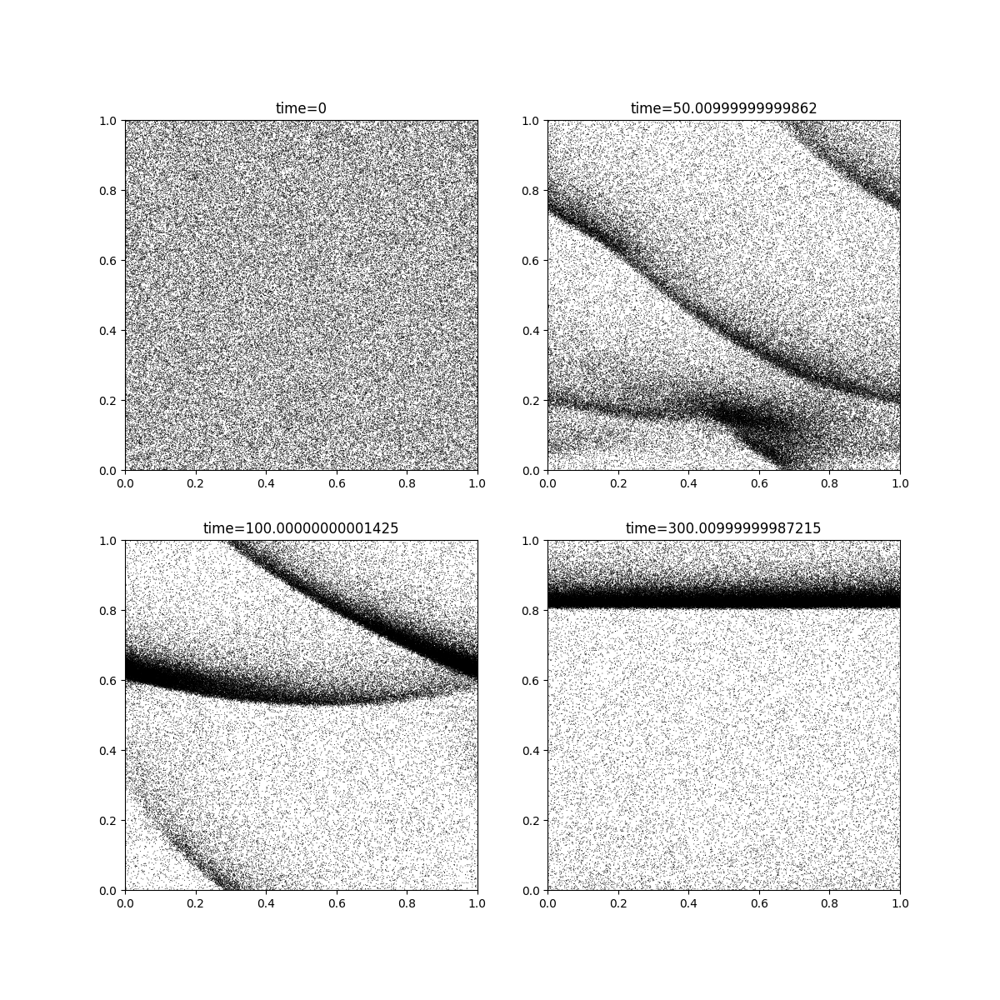
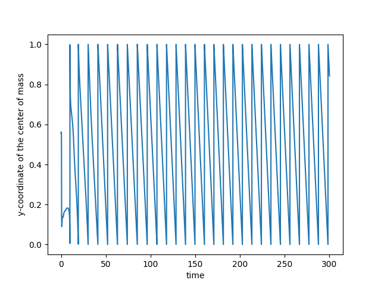

Note
Click here to download the full example code
Bands¶
The classical Vicsek model in a square periodic domain is known to produce band-like structures in a very dilute regime. These structures also appears in a mean-field regime. To showcase the efficiency of the SiSyPHE library, we simulate a mean-field Vicsek model with the target max_kappa() and \(10^6\) particles.
First of all, some standard imports.
import os
import sys
import time
import math
import torch
import numpy as np
from matplotlib import pyplot as plt
use_cuda = torch.cuda.is_available()
dtype = torch.cuda.FloatTensor if use_cuda else torch.FloatTensor
Set the parameters and create an instance of the Vicsek model.
import sisyphe.models as models
N = 1000000
L = 1.
dt = .01
nu = 3
sigma = 1.
kappa = nu/sigma
R = .01
c = .1
pos = L*torch.rand((N,2)).type(dtype)
vel = torch.randn(N,2).type(dtype)
vel = vel/torch.norm(vel,dim=1).reshape((N,1))
simu=models.Vicsek(pos=pos,vel=vel,
v=c,
sigma=sigma,nu=nu,
interaction_radius=R,
box_size=L,
boundary_conditions='periodic',
variant = {"name" : "max_kappa", "parameters" : {"kappa_max" : 10.}},
options = {},
numerical_scheme='projection',
dt=dt,
block_sparse_reduction=True)
Check that we are in a mean field regime…
Nneigh = simu.number_of_neighbours()
print("The most isolated particle has " + str(Nneigh.min().item()) + " neighbours.")
print("The least isolated particle has " + str(Nneigh.max().item()) + " neighbours.")
Out:
The most isolated particle has 232.0 neighbours.
The least isolated particle has 404.0 neighbours.
Set the block sparse parameters to their optimal value.
fastest, nb_cells, average_simu_time, simulation_time = simu.best_blocksparse_parameters(40,100)
plt.plot(nb_cells,average_simu_time)
plt.show()
Out:
Progress:0.0%
Progress:1.67%
Progress:3.33%
Progress:5.0%
Progress:6.67%
Progress:8.33%
Progress:10.0%
Progress:11.67%
Progress:13.33%
Progress:15.0%
Progress:16.67%
Progress:18.33%
Progress:20.0%
Progress:21.67%
Progress:23.33%
Progress:25.0%
Progress:26.67%
Progress:28.33%
Progress:30.0%
Progress:31.67%
Progress:33.33%
Progress:35.0%
Progress:36.67%
Progress:38.33%
Progress:40.0%
Progress:41.67%
Progress:43.33%
Progress:45.0%
Progress:46.67%
Progress:48.33%
Progress:50.0%
Progress:51.67%
Progress:53.33%
Progress:55.0%
Progress:56.67%
Progress:58.33%
Progress:60.0%
Progress:61.67%
Progress:63.33%
Progress:65.0%
Progress:66.67%
Progress:68.33%
Progress:70.0%
Progress:71.67%
Progress:73.33%
Progress:75.0%
Progress:76.67%
Progress:78.33%
Progress:80.0%
Progress:81.67%
Progress:83.33%
Progress:85.0%
Progress:86.67%
Progress:88.33%
Progress:90.0%
Progress:91.67%
Progress:93.33%
Progress:95.0%
Progress:96.67%
Progress:98.33%
Create the function which compute the center of mass of the system (on the torus).
def center_of_mass(particles):
cos_pos = torch.cos((2*math.pi / L) * particles.pos)
sin_pos = torch.sin((2*math.pi / L) * particles.pos)
average_cos = cos_pos.sum(0)
average_sin = sin_pos.sum(0)
center = torch.atan2(average_sin, average_cos)
center = (L / (2*math.pi)) * torch.remainder(center, 2*math.pi)
return center
Let us save the positions and velocities of 100k particles and the center of mass of the system during 300 units of time.
from sisyphe.display import save
frames = [50., 100., 300.]
s = time.time()
data = save(simu,frames,["pos", "vel"],[center_of_mass], Nsaved=100000, save_file=False)
e = time.time()
Out:
Progress:0%
Progress:1%
Progress:2%
Progress:3%
Progress:4%
Progress:5%
Progress:6%
Progress:7%
Progress:8%
Progress:9%
Progress:10%
Progress:11%
Progress:12%
Progress:13%
Progress:14%
Progress:15%
Progress:16%
Progress:17%
Progress:18%
Progress:19%
Progress:20%
Progress:21%
Progress:22%
Progress:23%
Progress:24%
Progress:25%
Progress:26%
Progress:27%
Progress:28%
Progress:29%
Progress:30%
Progress:31%
Progress:32%
Progress:33%
Progress:34%
Progress:35%
Progress:36%
Progress:37%
Progress:38%
Progress:39%
Progress:40%
Progress:41%
Progress:42%
Progress:43%
Progress:44%
Progress:45%
Progress:46%
Progress:47%
Progress:48%
Progress:49%
Progress:50%
Progress:51%
Progress:52%
Progress:53%
Progress:54%
Progress:55%
Progress:56%
Progress:57%
Progress:58%
Progress:59%
Progress:60%
Progress:61%
Progress:62%
Progress:63%
Progress:64%
Progress:65%
Progress:66%
Progress:67%
Progress:68%
Progress:69%
Progress:70%
Progress:71%
Progress:72%
Progress:73%
Progress:74%
Progress:75%
Progress:76%
Progress:77%
Progress:78%
Progress:79%
Progress:80%
Progress:81%
Progress:82%
Progress:83%
Progress:84%
Progress:85%
Progress:86%
Progress:87%
Progress:88%
Progress:89%
Progress:90%
Progress:91%
Progress:92%
Progress:93%
Progress:94%
Progress:95%
Progress:96%
Progress:97%
Progress:98%
Progress:99%
Progress:100%
Print the total simulation time and the average time per iteration.
print('Total time: '+str(e-s)+' seconds')
print('Average time per iteration: '+str((e-s)/simu.iteration)+' seconds')
Out:
Total time: 1619.642599105835 seconds
Average time per iteration: 0.05398628709395804 seconds
At the end of the simulation, we plot the particles and the evolution of the center of mass.
# sphinx_gallery_thumbnail_number = 2
f = plt.figure(0, figsize=(12, 12))
for frame in range(len(data["frames"])):
x = data["pos"][frame][:,0].cpu()
y = data["pos"][frame][:,1].cpu()
u = data["vel"][frame][:,0].cpu()
v = data["vel"][frame][:,1].cpu()
ax = f.add_subplot(2,2,frame+1)
plt.quiver(x,y,u,v)
ax.set_xlim(xmin=0, xmax=simu.L[0].cpu())
ax.set_ylim(ymin=0, ymax=simu.L[1].cpu())
ax.set_title("time="+str(data["frames"][frame]))
center = data["center_of_mass"]
center_x = []
center_y = []
for c in center:
center_x.append(c[0])
center_y.append(c[1])
f = plt.figure(1)
plt.plot(data["time"],center_x)
plt.ylabel("x-coordinate of the center of mass")
plt.xlabel("time")
f = plt.figure(2)
plt.plot(data["time"],center_y)
plt.ylabel("y-coordinate of the center of mass")
plt.xlabel("time")
plt.show()
- 
- 
We are still in a mean-field regime.
Nneigh = simu.number_of_neighbours()
print("The most isolated particle has " + str(Nneigh.min().item()) + " neighbours.")
print("The least isolated particle has " + str(Nneigh.max().item()) + " neighbours.")
Out:
The most isolated particle has 34.0 neighbours.
The least isolated particle has 6125.0 neighbours.
Total running time of the script: ( 29 minutes 34.952 seconds)